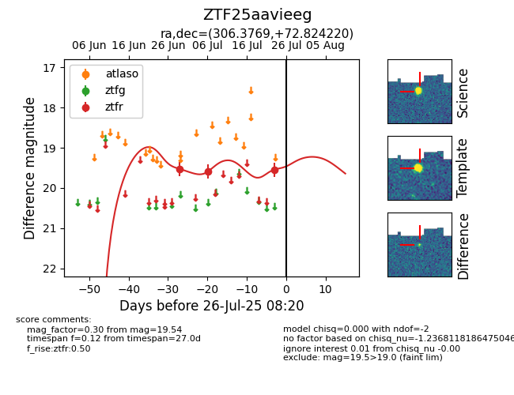

Target ZTF25aavieeg at 2025-07-26 08:20, see:
FINK: fink-portal.org/ZTF25aavieeg
Lasair: lasair-ztf.lsst.ac.uk/objects/ZTF25aavieeg
ALeRCE: alerce.online/object/ZTF25aavieeg
alt names
ZTF25aavieeg (ztf,fink)
coordinates:
equatorial (ra, dec) = (306.3769,+72.82422)
galactic (l, b) = (106.2578,+19.31594)
photometry
last ztfr=19.54
3 ztfr detections
